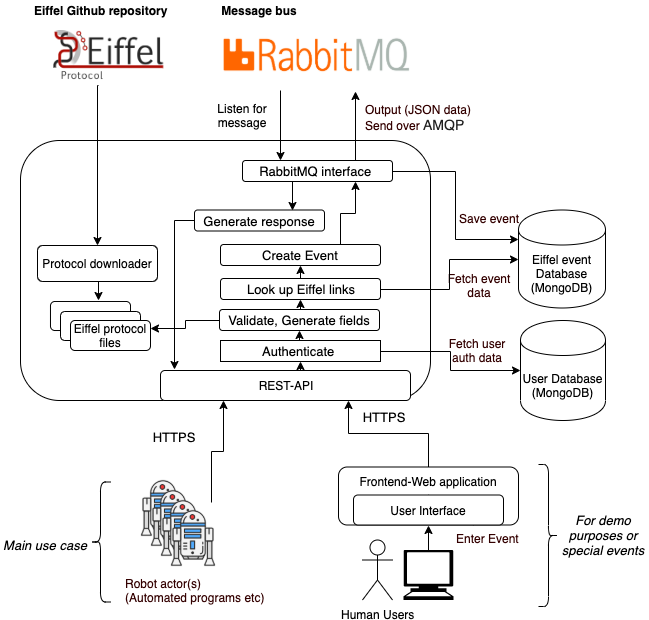

Architecture
Input comes from a user, either human or robot, who is validated through a token over an HTTPS connection. The input from the client contains data to be used in the creation of an Eiffel event that the application will fill out and complete. Through a REST-API, the application uses the user-token to authenticate the user (userDB) as well as receive the incomplete event. In this stage, the application will go through the intrinsic validation process using local, pre-downloaded Eiffel-schemas, to validate the user input. If the initial validation is successful, the application will proceed to generate missing fields. This includes timestamp, UUID and any missing links which are provided in the lookupobject. This is done by adding links to the JSON object which is the Eiffel-event as well as validating the link against the DB to confirm that it is a legal target. Once the links have been fetched and fields generated, the event will once more be validated, intrinsically and externally against the DB to ensure that all links are correct. When the event is finalized, it will be sent to the RabbitMQ-interface, this interface will do three things: save the event to the eventDB, generate a response to the user (“successfully created event”) as well as output the JSON data over AMQP to the message bus. If any errors are generated along the way, they are casted to the client as an error code with a message describing what went wrong.
